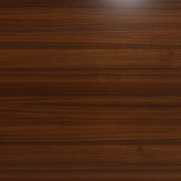

Fragment Shading
Vertex Shading
TEX ON/OFF
Rotation Axis:
X
Y
Z
Rotation direction:
Viewing Volume settings:
fov [10, 120]:
zNear [1, 10]:
zFar [10, 100]:
Camera Position Settings:
xCamera [-10, 10]:
yCamera [0, 25]:
zCamera [-25,25]:
SpotLightProperties:
ON/OFF
Cut-off Angle [0, 90]:
xDirection [-10,10]:
Height [0,50]:
zDirection [-10,10] :